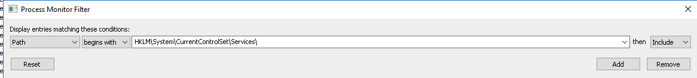
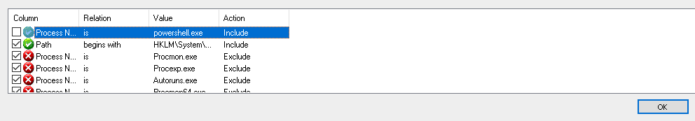
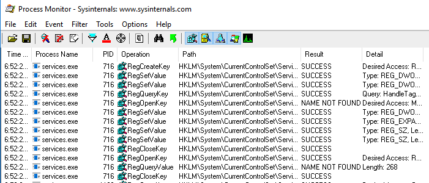

Engineer a Detection - Procmon
Description
Now that we have selected New Service as our technique, and used the detection guidance within MITRE ATT&CK to research common utilities. We have chosen to focus on PowerShell’s New-Service cmdlet as one of the most common methods to install services. In this next step, we will monitor SC.EXE with Procmon to dynamically analyze how it creates a service, and continue filling out the abstraction map.
Review previous labs for process similarities in order to accomplish the main objective(s)
Goals
By the end of this lab, you should be able to
- Understand how to use Procmon
- Understand how to perform dynamic analysis with Procmon
If this is not the case, please ask for help!
Requirements
- Access to the Windows 10 student system
- Sysinterals Procmon
None
Steps
1. Open Procmon:
- Open File Explorer and navigate to
C:\tools\SysinteralsSuite

- Right click on
Procmon64.exeand click “Run as administrator” - Click on “Agree” on the License Agreement
Procmon should be open and ready to use:

2. Set up Procmon for dynamic analysis
Now that we have an example of a common method to install a service, we are going to use Procmon to dynamically analyze what happens when the New-Service powershell cmdlet creates a service.
Follow the steps below to set Procmon up:
- With Procmon open, click on Filter

- Click on Filter again

- In the Filter popup, enter the following values as:
Process Name is powershell.exe. See screenshot for reference. Once these values are added, clickAdd

- Once the filter appears in the list, click Apply

Procmon is now configured to show us events for only powershell.exe activity on our system
2. Run example using Procmon
Now that Procmon is configured, we need to install a service using powershell.exe
To do this:
- Open an Administrative PowerShell window
- Run the following command:
New-Service -Name LabService -BinaryPathName C:\Windows\System32\notepad.exe

If the command completed successfully, you will see

3. Analyze results
Now that our service has been created, we need to see what clues are contained in the Procmon data.

We can see in Procmon that there is an amount of activity, but reading through, we see no evidence of interaction with HKEY_LOCAL_MACHINE\SYSTEM\CurrentControlSet\Services. Why is this?
We know that the Service Control Manager database is stored in the registry. Is powershell.exe the process creating the service? No. However, we don’t know which process is so lets do some more analysis to find out.
4. Change Capture Filter
- With Procmon open, click on Filter
Click on Filter again
In the Filter popup, enter the following values as:
Path begins with HKEY_LOCAL_MACHINE\SYSTEM\CurrentControlSet\Services\. Then clickAdd

- We want to remove powershell.exe from the capture list, to do this uncheck its box on the left of its column within the filter listing. Your filter should now look like this:

Once the filter is removed click
ApplyGo back over to Procmon and perform analysis

Questions:
- What is the process name that created the service?
- Why is this process used? Does it relate to RPC? If so - how?
- How is powershell calling this process to create this service?
- What is the full path name of the registry key?